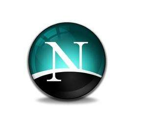
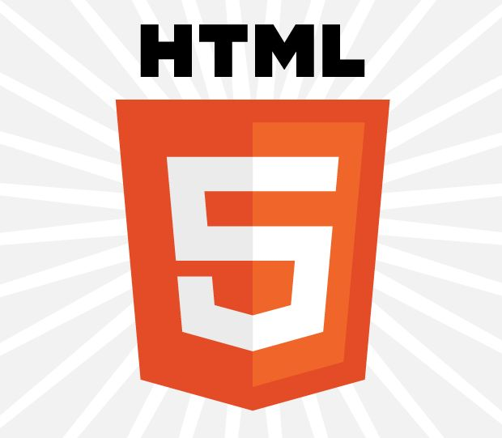

前言：做一名Web设计师是一件令人兴奋的事。在Web技术中，JavaScript是一个经历从被人误解到万众瞩目的巨大转变，在历史的冲击中被留存下来的个体。因为JavaScript的引导，Web开发也从混乱无序的状态转变为需要经过严格训练才能胜任的工作。当大家谈论起Web开发时，自然会提到Web标准中的三门语言：①HTML（超文本标记语言）②CSS（层叠样式表）③JavaScript（没法翻译）。通常来说HTML和CSS总是占据着核心地位，但它们三者之间不存在对抗关系，反而是交融、互助的关系（尽管现在大家都在提倡各种分离的概念）。网页的重要意义是与用户进行交互。其中，JavaScript就是充当着使网页具备交互能力的程序设计语言。

JavaScript的出现
JavaScript是由Netscape（网景）和Sun（Java语言的起源，后被Oracle收购）两家公司合作开发的。在JavaScript出现前，尽管我们拥有“HTML（超文本标记语言）”这个工具，起初我们使用它来规范科研文献，但我们可以想象当时的HTML其实只是简单的超文本文档，只能完成基本的内容显示与跳转等功能。但JavaScript出现后，HTML瞬间从单一的文本升级为了具有强大交互性的工具。1995年，JavaScript出现在了Netscape Navigator 2浏览器中。
当时Netscape Navigator毋庸置疑地主宰了浏览器市场，微软推出的IE浏览器在他面前只是一个弟弟。在IE3出现时，微软发布了VBScript，同时以JScript为名发布了JavaScript的一个版本，跟上了Netscape的步伐。在竞争面前，Netscape和Sun公司联合ECMA（欧洲计算机制造商协会）对JavaScript制定了标准，终于出现了ECMAScript语言。而我们常说的ES5，ES6中的ES，其实就是ECMAScript的简写，而JavaScript实际上也就是ECMAScript。
梗：我们常说的雷锋与雷峰塔的关系，跟Java与JavaScript的关系非常类似，后来大家以此调侃JavaScript。
JavaScript是一种脚本语言，它在一般情况下只能应用在Web浏览器去完成操作而很少像Java、C++这种编译型语言一样独立运行。因此，JavaScript具有与编译型语言的两种对立的特性：局限性和简单性。最后要提出的是两个概念：
① 由于JavaScript提供了一些操控Web浏览器的手段，可以调整浏览器的窗口高度、位置等属性，这种办法被称为BOM（Browser Object Model），例如window对象就是BOM中的一 个较为核心的对象；
② HTML本身是树形的结构，JavaScript同样提供了许多操纵HTML树的方法，同样可以对它们进行属性的调整，这种办法被称为DOM（Document Object Model），例如document对象就是DOM中的一个较为核心的对象。
DOM
在JavaScript编程中，有一个重要的概念叫作DOM（文档对象模型）。所谓的DOM，就是一种将文档内容进行抽象，以及赋予意义的方法。你也可以用我们程序设计中“类”里面的“方法”来理解DOM，因为本质上DOM就是一种API，JavaScript可以通过这些API更方便地操控标记语言中的元素。在现实世界中，我们人类对世界的认识也可以总结为一套类似的方法，称为WOM（该概念源自《JavaScriptDOM编程艺术》一书，个人认为非常地贴切），中文叫做“世界对象模型”。我们用“车”、“房子”、“树”云云来定义我们身边的事物，以此来称呼这些事物，我们身边的人也一定会在一瞬间内反应过来，“哦你讲的是这一个物品”。类比到HTML5中，我们用
像以上这些初级的、试验性质的、还未形成统一标准的DOM，我们把它称为“第0级DOM（DOM Level 0）”。浏览器战争
时间来到了1997年，Netscape公司在6月发布了Netscape Navigator 4，对应的，微软也在10月发布了IE 4。两格浏览器都对早期的版本进行了改进，扩展了DOM，这意味着通过JavaScript可以完成更多的功能了。我们迎来了“DHTML（Dynamic HTML，动态的超文本标记语言）”的概念。区别于像HTML、JavaScript这些技术，DHTML只是一种概念。这个概念的意思就是：
① 使用HTML编写网页的元素；
② 使用CSS设置这些元素的样式；
③ 使用JavaScript操控页面、改变样式，以及实现动态的交互。
尽管技术一直在发展，我们却迎来了噩耗：为了竞争，两种浏览器分别使用了两种不相容的DOM。虽然大家的目标都是相同的——实现美观动态交互性强的网页，但实现的方式却大相径庭。这使得开发网页的成本变得十分高，为了让使用不同浏览器的用户都可以浏览网页的内容，我们必须编写不同规范的代码。DHTML本来是绝对好的，它符合人类对科技发展的憧憬，但在实现的路上却因为某些商业原因遭遇了空前的困境。很快，DHTML被大家认定为“宣传的噱头”与“难以实现”。
标准化解决问题
浏览器制造商在以DOM为武器对抗时，浏览器开发工作十分困难。此时W3C（World Wide Web Consortium，万维网联盟）小组站出来了，他们制定了一个标准的DOM。而值得庆幸的是，浏览器制造商也肯放下敌意协作制定标准。1998年，我们迎来了“第1级DOM（DOM Level 1）”：
var pdisplay = document.getElementById('p').style.display
乍一看似乎并没有什么区别，事实上第1级DOM已经可以让任何一种程序设计语言对任何一种标记语言进行操控了，这是对未来HTML和XML发展的巨大推动（我们现在一般使用的是DOM Level 3）。
浏览器战争结局以及后续发展
以前我们用的是windows 98 或者是windows XP之类的操作系统，里面通常会在桌面就有一个IE浏览器的快捷方式。我们通过这个缩影可以联想到，微软在浏览器市场份额上战胜了Netscape。时至今日，大家提到IE浏览器时，总是说它是罪恶的，微软后来自己也推出了Microsoft Edge浏览器。其中的原因就是IE浏览器在许多方式上不遵循W3C的标准，导致增大了许多开发上的负担。从2003年到现在，许多浏览器诞生了。苹果公司发布了它基于Webkit的Safari浏览器，从一开始就坚定不移地遵循W3C的标准；Firefox、Chrome、Opera这些被大家推荐使用的，以及其他浏览器们都对DOM有良好的支持，包括很多手机浏览器。2014年，HTML5诞生了，它与DOM、AJAX等等技术的配合，使互联网产生了巨大的飞跃，现代浏览器对于DOM特性的覆盖率高达95%，虽未到100%，但我们基本可以过上编写一个脚本可以在多处兼容运行的幸福生活了。
最后
之所以花这么大篇幅在介绍JavaScript的历史时介绍了DOM和浏览器的发展，是因为它们是JavaScript的载体，我们必须也要重视DOM和浏览器兼容等知识的学习。以及我们需要感恩这些制定标准，效忠于科技发展的伟人们。多亏了标准化的DOM，我们才能在不同浏览器中实现一致的梦想。